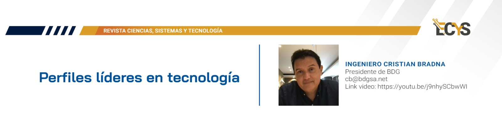

1 Perfiles líderes en tecnología

YouTube: https://youtu.be/j9nhySCbwWI
1.1 Entrevista
¿Quién es el Ingeniero Christian Bradna?
Mucho gusto gracias por la entrevista, mi nombre es Christian Bradna, yo soy ingeniero en sistemas de la tercera promoción de ingenieros de la Universidad de San Carlos de Guatemala me gradué en el año 92-91 por ahí, no me recuerdo bien. Y al terminar la universidad seguí algunos estudios, hice una maestría en Administración de empresas en la Universidad Católica de Chile, una tremenda experiencia, hice otra maestría en la Universidad de Murcia en la Escuela de Negocios, esa fue de liderazgo y coaching, y luego he tenido la oportunidad de estudiar en lugares como el MIT, como he tomado muchas muchas certificaciones, posgrados. Estudié en la Universidad Francisco Marroquín un tema de Calidad en algún momento de mi vida e hice un emprendimiento en el año 2002, de lo que hoy es la compañía BDG, asociado con otro amigo de la Universidad de San Carlos de Guatemala, Francisco Sandoval. Soy padre de cuatro hijos y tengo una vida muy plena y muy linda, ese soy yo.
¿Quién es su empresa?
Somos la fábrica más grande de la región, o sea usted agarra Centroamérica y el Caribe, no hay nadie que tenga 600 ingenieros como nosotros. Hemos ganado dos veces el Premio Nacional a la Exportación, ese es un galardón a nivel nacional muy importante y somos una de las poquísimas empresas de software, solo ha habido dos en la historia de Guatemala que han ganado ese galardón, entonces digamos que sí estamos muy contentos y muy orgullosos del crecimiento de la empresa. Yo di clases en la San Carlos, di estructura de datos, di archivos, di inteligencia artificial, di modelación; estuve a cargo de tesis y en algún momento me retiré, y di clases en la Landívar, di clases de la Marroquín. Me sigue gustando la docencia, pero hoy el tiempo lo balanceo en otras actividades.
¿Cuál fue la inspiración detrás de fundar su primera empresa en tecnología?
Cuando yo salí de la universidad mi principal objetivo era conseguir un empleo, el cual obtuve rápidamente; trabajé en un banco, en una multinacional y luego en una empresa familiar bastante grande, y en algún momento de mi vida me enfrenté con el dilema de si yo quería generar riqueza o administrar riqueza y estaba por el camino de administrar riqueza siendo empleado y me preocupaba ver a los empleados de más de 60 años cuando eran despedidos de las empresas y les daban las gracias por sus años de trabajo y me dije no quiero llegar a ese momento en mi vida no quiero llegar a los 65-66 años y que me despidan por ser un empleado muy viejo, eso me inspiró, eso fue realmente lo que me inspiró a emprender y tener una empresa.
¿Cuáles fueron los mayores desafíos que enfrentó al iniciar su propia empresa?
Fueron dos, el primero es no tener acceso al mercado de capitales, entonces en estos países pequeños las empresas hay que iniciarlas con capital propio y eso cuesta, cuesta porque los que no venimos de una familia de mucha plata tenemos que arrancar con lo que tengamos y lo segundo fue el tema de networking. En un país pequeño hay que conocer mucha gente para hacer negocios y eso es algo que hemos estado construyendo desde que empezamos este emprendimiento y es algo que también cuesta y es súper importante a la hora de emprender.
¿Cómo ha liderado el crecimiento y desarrollo de su empresa desde sus inicios hasta ahora?
La fórmula que hemos usado es tener gente talentosa y entonces me he rodeado de gerentes realmente brillantes, un equipo de administración muy bueno, algunos egresados de la Universidad de San Carlos, la mayoría, ya casi todos con maestría, pero sobre todo gente muy brillante, gente muy capaz, rodeándose uno de gente que es mejor que uno las cosas tienen mucha más probabilidad de tener éxito y, por supuesto, esa es la parte que también lidera mi socio, entonces hemos hecho juntos una mancuerna muy buena y eso ha sido digamos parte de todo este éxito.
¿Cuáles considera que son las habilidades clave de liderazgo en el ámbito tecnológico?
Yo diría que dos, uno son las habilidades blandas para liderar un equipo, uno debe cultivar sus habilidades blandas, mejorar su inteligencia emocional, tener habilidad para conversar con las personas, ser alguien que escucha, ser empático; todas estas habilidades blandas diría que son requisito número uno y seguido de las habilidades blandas se requiere todo el tema de mantenerse actualizados tecnológicamente, la velocidad y la forma en la que cambia la tecnología hoy en día es impresionante, hay que estar leyendo todos los días, porque las cosas que ayer se hicieron y que ayer funcionaron hoy ya no funcionan, entonces mantenernos actualizados todos los días, leer: papers revistas, libros; leer 10, 12 a 14 libros al año, estar suscrito a las mejores publicaciones del mundo y mantenerse actualizado, eso es clave.
¿Cómo maneja la innovación y la adaptación a las cambiantes tendencias tecnológicas en su empresa?
Bueno, digamos que por un lado de forma personal leyendo, leyendo, asistiendo a seminarios, asistiendo a podcast, escuchando podcast, escuchando teds, escuchando webinars, manteniéndome actualizado, diría yo que probablemente del 15 al 20% de todo mi tiempo es estarme actualizando, esos son programas de posgrados, eso son certificaciones, esos son charlas, son reuniones, actualización, actualización, actualización continua. Lo segundo es tener dentro del equipo gente que ayude en la innovación porque esto no puede ser tarea de una persona entonces en el equipo de trabajo hay personas que colaboran, cooperan y aportan en los temas de innovación y entonces es bajo la misma dinámica que alguien del equipo dice mira estuve leyendo este paper, salieron estas tecnologías, tenemos que actualizarnos, tenemos que innovar, tenemos que meternos, tenemos que invertir, tenemos que aprender y lo hacemos y lo hacemos continuamente, invertimos muchísimo en eso, somos una empresa que tiene casi 600 ingenieros y no hubiéramos logrado llegar a este tamaño si no innováramos, probablemente hubiéramos quebrado hace 5 o 10 años.
¿Cómo equilibra la toma de decisiones estratégicas con la agilidad necesaria en el entorno tecnológico actual?
Usando metodologías, nosotros utilizamos varias metodologías, por ejemplo para la parte de ventas utilizamos una metodología de venta de servicios de alto valor, mahan khalsa, es una de las top 3 del mundo, pero para la parte de administración usamos Scaling Up somos una compañía que se administra con metodologías Scaling Up, eso nos permite ser ágiles, eso nos permite ser muy rápidos, eso nos mantiene comunicados con los equipos todos los días, yo todos los días a las 8:00 de la mañana tengo una reunión de 5 minutos con mis gerentes y ellos con sus subgerentes y eso nos mantiene al paso que necesitamos estar.
¿Cuál es su visión a largo plazo para el futuro de su empresa en el ámbito tecnológico?
Bueno, nosotros al administrar los Scaling Up tenemos muy claras, muy claro nuestros objetivos, los tiene claro cada una de las personas del equipo, digamos de administración del Management, nosotros hacemos planificación estratégica y hacemos gestión operativa. En la planificación estratégica nosotros estamos apuntando a un crecimiento fuera de Guatemala, el cual ya empezamos hoy operando en Guatemala, El Salvador, Costa Rica, Panamá, República Dominicana y tenemos clientes en Estados Unidos, México, Brasil y casi todos los países de Sudamérica; nosotros apuntamos a ser una compañía con 5,502 colaboradores, digamos esa es una meta muy clara que tenemos y apuntamos a ser una de las fábricas de software más grandes de América Latina. Hoy ya somos la más grande de Centroamérica y el Caribe, con cerca de 600 ingenieros, pero apuntamos a ser una de las más grandes de América Latina esos son como nuestras metas más importantes a las cuales le apuntamos.
¿Cómo aborda la responsabilidad social y la sostenibilidad en el desarrollo y crecimiento de su empresa tecnológica?
Esa parte nos encanta, al ser nosotros estudiantes de la Universidad de San Carlos la verdad es que crecimos en un entorno de escasez como hijos, como estudiantes y cuando llegamos al mercado a trabajar nos dimos cuenta que sí hay formas de crecer y depende de cada uno de nosotros, depende el esfuerzo que hagamos y si hay formas de emprender y todos emprendemos pequeños y crecemos todos emprendemos pequeños. La responsabilidad social cuando uno viene de una vida de escasez de joven, es algo que se lleva en el corazón y es algo que uno debe devolverle a la sociedad, porque en algún momento a nosotros no nos ayudaron y ahora nos toca ayudar a otras personas, entonces tenemos varios proyectos de responsabilidad social, por ejemplo nosotros somos los colaboradores de BDG, construimos casas para gente de muy, muy, muy escasos recursos, entonces destinamos un fin de semana, contratamos un arquitecto que nos dirige porque somos ingenieros en sistemas, pero nosotros levantamos la casa, nosotros construimos, nosotros pintamos, nosotros ponemos las puertas, las ventanas, los techos, ponemos los baños y le entregamos una casa a gente de muy escasos recursos y cuando uno ve la sonrisa de esas personas, cuando uno ve el asombro de esas personas por primera vez tener una casa es increíble.
Por otro lado, también ayudamos a la fundación Don Bosco, que tiene un proyecto lindísimo de ayuda a jóvenes de escasos recursos, ahí becamos jóvenes. Estamos trabajando también con una fundación que enseña ajedrez a la gente de escasos recursos y la idea es mejorar sus esquemas de pensamiento y que aprendan estrategias, y tenemos otros programas de ayuda y responsabilidad social. Estamos entrando también a un programa de responsabilidad social ambiental, así que estamos muy activos, estamos tratando de ayudar a la gente que es menos afortunada, que fue menos favorecida en la vida y que le podemos cambiar la vida.
Mensaje del Ingeniero Christian Bradna
El mensaje que me gustaría dejar tiene que ver con una frase de José Ortega y Gasset en el libro La rebelión de las masas, él dice esto: “el mejor no nace mejor, el mejor es el que se exige más a sí mismo”, y así es la vida; para ser el mejor en algo hay que exigirse mucho más que los demás y parte del reto y la reflexión es tratar de ser siempre los mejores en la vida, los mejores nuestra mejor versión de nosotros mismos para nosotros mismos, y bajo esa premisa y bajo un trabajo enfocado el éxito va llegar, el éxito no llega gratis, el éxito llega esforzándose, el éxito llega dando la milla extra, el desvelo extra y tarde o temprano llega.